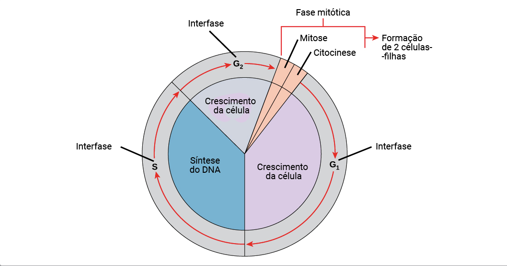
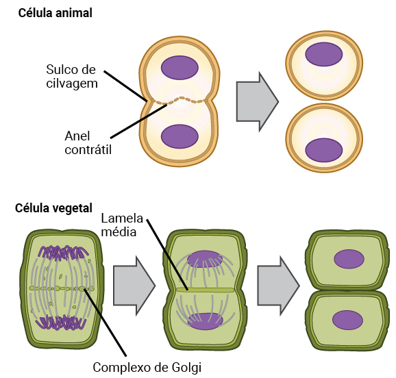

Ciclo Celular · Mitose · Meiose · Controle por Ciclinas e CDKs · P1 Biologia Geral — UNINTER
1. Por que a Célula se Divide?
A capacidade de reprodução é uma propriedade fundamental da vida. Um indivíduo adulto é formado por bilhões de células, todas derivadas de uma única célula — o zigoto. Mesmo após o crescimento, a divisão celular continua sendo essencial:
Crescimento
Aumento do número de células durante o desenvolvimento
Renovação
Eritrócitos: vida média 120 dias → 2,5 milhões novos por segundo
Reparo
Substituição de células lesadas em tecidos (pele, mucosa, osso)
2. O Ciclo Celular — As Fases
O ciclo celular é um conjunto ordenado de eventos que culmina com o crescimento da célula e sua divisão em duas células-filhas geneticamente idênticas.

Ciclo celular: Interfase (G1 + S + G2) e Fase Mitótica (Mitose + Citocinese), resultando em 2 células-filhas (Prof. Verónica Ramírez — UNINTER)
Fase
Nome
Duração
O que acontece
G1
Crescimento 1
~5 horas
Aumento de tamanho; fabricação de organelas, proteínas. Existe o ponto de restrição R — célula decide se vai ou não se dividir
S
Síntese de DNA
~7 horas
Replicação do DNA. Cromossomos com 1 cromátide passam a ter 2 cromátides unidas pelo centrômero
G2
Crescimento 2
~3 horas
Célula cresce mais; ponto de controle G2-M: verifica se o DNA foi completamente duplicado e reparado
Interfase = G1 + S + G2 (a maior parte do tempo — célula "prepara o terreno"). Fase mitótica = Mitose + Citocinese (relativamente breve, mas visualmente dramática).
3. G0 — Células em Repouso
G0 é um estado de saída do ciclo, um "anexo" da interfase onde as células estão em repouso. Não é uma fase do ciclo — é uma suspensão dele.
Permanentemente em G0 Neurônios — nunca se dividem; exercícios estimulam crescimento axonal mas não divisão
Temporariamente em G0 Hepatócitos — entram em G0 mas voltam a G1 diante de dano hepático (álcool, hepatite C, malária)
4. Controle do Ciclo Celular — Ciclinas e CDKs
O ciclo celular é regulado por um par de moléculas que funcionam juntas como um "interruptor molecular":
Ciclinas
Proteínas cuja concentração oscila ao longo do ciclo — aumentam e depois são degradadas rapidamente. São o "acelerador".
Tipos principais: Ciclinas G1 (fase S) e Ciclinas Mitóticas (fase M)
CDKs (Quinases dependentes de Ciclina)
Enzimas que fosforilam proteínas-alvo para promover a progressão do ciclo. Só se ativam quando se unem a uma ciclina.
Principais: Cdk2 (fase S) e Cdc2 (mitose)
Como Funciona na Prática
G1→S
Ciclina G1 + Cdk2 = SPF (Fator Promotor da Fase S)
Quando a Ciclina G1 atinge um limiar de concentração, ativa a Cdk2. O complexo SPF abre as origens de replicação e inicia a síntese de DNA.
G2→M
Ciclina M + Cdc2 = MPF (Fator Promotor da Mitose)
O complexo MPF fosforila proteínas citosólicas e nucleares para iniciar a condensação dos cromossomos e formação do fuso. A dissociação do MPF ocorre no início da anáfase.
Pontos de Controle (Checkpoints)
Ponto de Controle
O que Verifica
Consequência se Falhar
G1/S (ponto R)
Massa celular suficiente? Ambiente favorável? DNA intacto?
Célula não entra em S — fica em G0 ou inicia apoptose
G2/M
DNA completamente replicado? Erros reparados?
Célula não entra em mitose até o reparo estar completo
Fuso mitótico
Todos os cromossomos estão ligados ao fuso?
Anáfase não começa — evita aneuploidia (células com número errado de cromossomos)
Relevância Clínica: Câncer
O câncer resulta de falhas nos pontos de controle. Mutações em proto-oncogenes (ativadores do ciclo) os convertem em oncogenes que empurram a célula para dividir sem parar. Mutações em genes supressores de tumor (como p53, Rb) eliminam os "freios" do ciclo — célula divide com DNA danificado.
5. As Etapas da Mitose
A mitose divide o núcleo em dois, preservando o número diplóide de cromossomos (2n). Em organismos superiores tem 5 etapas:
1
Prófase
Cromátides se condensam (ficam mais curtas e espessas) e se tornam visíveis. Nucléolo desaparece. Huso mitótico começa a se formar. Centrômeros ficam visíveis — placas proteicas chamadas cinetocoros se associam a eles.
2
Prometáfase
Período de transição breve. Membrana nuclear se dissolve. Microtúbulos do fuso se ligam aos cinetocoros. Cromossomos começam a se mover em direção ao centro.
3
Metáfase
Cromossomos atingem máxima condensação. Ficam alinhados no plano equatorial da célula (placa metafásica), todos presos ao fuso. Carioteca (envelope nuclear) não está mais visível.
4
Anáfase
Cromátides-irmãs se separam — cada uma vai para um polo oposto puxada pelo fuso mitótico. Formato de "V" (metacêntricos) ou "J" (acrocêntricos). Ao final, cada polo tem um conjunto completo de cromossomos.
5
Telófase
Cromossomos chegam aos polos e começam a descondensação. Membrana nuclear se reforma ao redor de cada conjunto. Em células animais, começa uma constrição no plano equatorial — início da citocinese.
6. Citocinese — Divisão do Citoplasma
A citocinese ocorre durante e após a telófase, dividindo o citoplasma em duas células-filhas. O mecanismo é diferente entre células animais e vegetais:

Esquerda: célula animal — sulco de clivagem formado pelo anel contrátil de actina/miosina. Direita: célula vegetal — lamela média formada pelo complexo de Golgi (placa celular) (Prof. Verónica Ramírez — UNINTER)
Célula Animal
Um anel contrátil de filamentos de actina e miosina se forma no plano equatorial. Contrai-se progressivamente formando o sulco de clivagem até dividir a célula em duas.
Célula Vegetal
Vesículas do complexo de Golgi migram para o centro e se fundem formando a lamela média (placa celular). Cresce de dentro para fora até completar a separação.
Por que a Diferença?
Células vegetais têm parede celular rígida — não é possível "apertar" a membrana de fora para dentro. Por isso a divisão ocorre de dentro para fora com a formação de uma nova parede.
7. Meiose — Divisão para Reprodução Sexual
A meiose é um tipo especial de divisão, exclusiva de organismos com reprodução sexual. Seu objetivo é produzir células com metade do número de cromossomos (células haplóides, n).
Por que a Meiose é Necessária?
O genoma humano tem 46 cromossomos (2n). Se a fecundação unisse dois gametas com 46 cromossomos cada, o zigoto teria 92! E na próxima geração, 184... A meiose reduz o número à metade antes da fecundação.
Características da Meiose
•
Ocorre nas gônadas (testículos e ovários)
•
Realiza 2 divisões celulares consecutivas a partir de uma única célula 2n=46
•
Gera 4 células haplóides (n=23): 4 espermatozoides no homem, 1 ovócito + 3 corpos polares na mulher
Divisão
Tipo
Resultado
Meiose I
Reduccional
2n → n: separa os cromossomos homólogos (de 46 para 23 cromossomos, cada um com 2 cromátides)
Intercinese
(pausa)
Breve intervalo — NÃO há replicação de DNA
Meiose II
Ecuacional
n → n: separa cromátides-irmãs (similar à mitose); resultado final: 4 células com n=23
Etapas da Prófase I (a mais longa e complexa)
Leptóteno (Leptonema) — cromossomos começam a condensar
Zigóteno (Zigonema) — cromossomos homólogos se aproximam (sinapses)
Paquíteno (Paquinema) — crossing-over: troca de segmentos entre homólogos → variabilidade genética
Diplóteno (Diplonema) — cromossomos começam a se separar, mas ficam unidos nos quiasmas
Diacinese — condensação máxima; fuso começa a se formar
8. Mitose vs Meiose — Comparação Rápida
Característica
Mitose
Meiose
Nº de divisões
1
2
Células-filhas
2
4
Ploidia das filhas
Diplóide (2n)
Haplóide (n)
DNA idêntico?
Sim (cópias idênticas)
Não (recombinação na prófase I)
Onde ocorre
Células somáticas
Células germinativas (gônadas)
Função
Crescimento, reparo
Produção de gametas
Crossing-over
Não (raro)
Sim (prófase I — essencial para variabilidade)
9. Relevância Clínica
Câncer
Acúmulo de mutações em proto-oncogenes e genes supressores de tumor leva à divisão celular descontrolada. Falha nos checkpoints permite que células com DNA danificado se proliferem.
Síndrome de Down (Trissomia 21)
Falha na não-disjunção durante a Meiose I — o par 21 não se separa, gerando gameta com 2 cópias do cromossomo 21. Zigoto resultante tem 47 cromossomos.
Quimioterapia
Muitos quimioterápicos atacam células em divisão ativa: taxol estabiliza os microtúbulos do fuso (bloqueia anáfase), colchicina desfaz o fuso mitótico. Efeito colateral: também afeta células normais de rápida divisão (cabelo, mucosa).
Neurônios e G0
Neurônios entram definitivamente em G0 após o nascimento. Isso explica a dificuldade de recuperação após lesão neuronal. Pesquisas com células-tronco buscam contornar esse bloqueio.